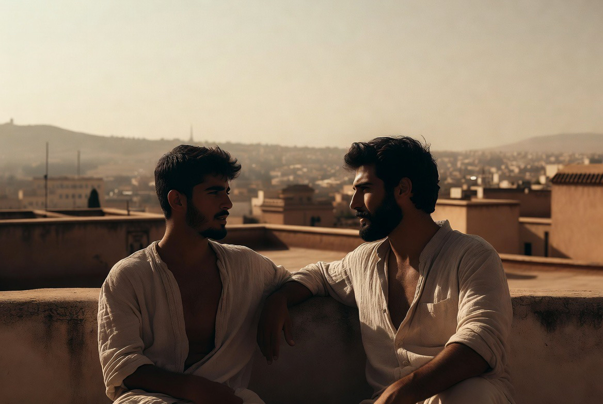
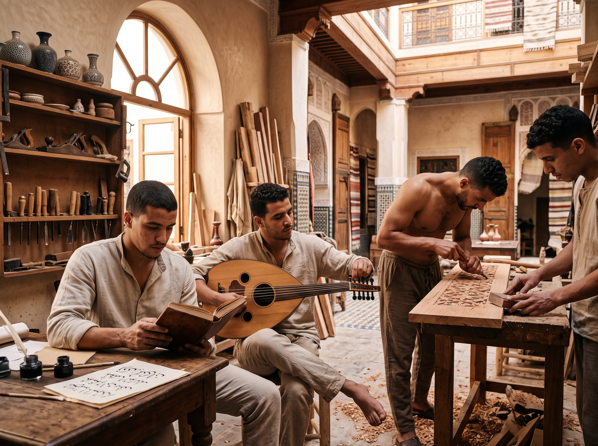
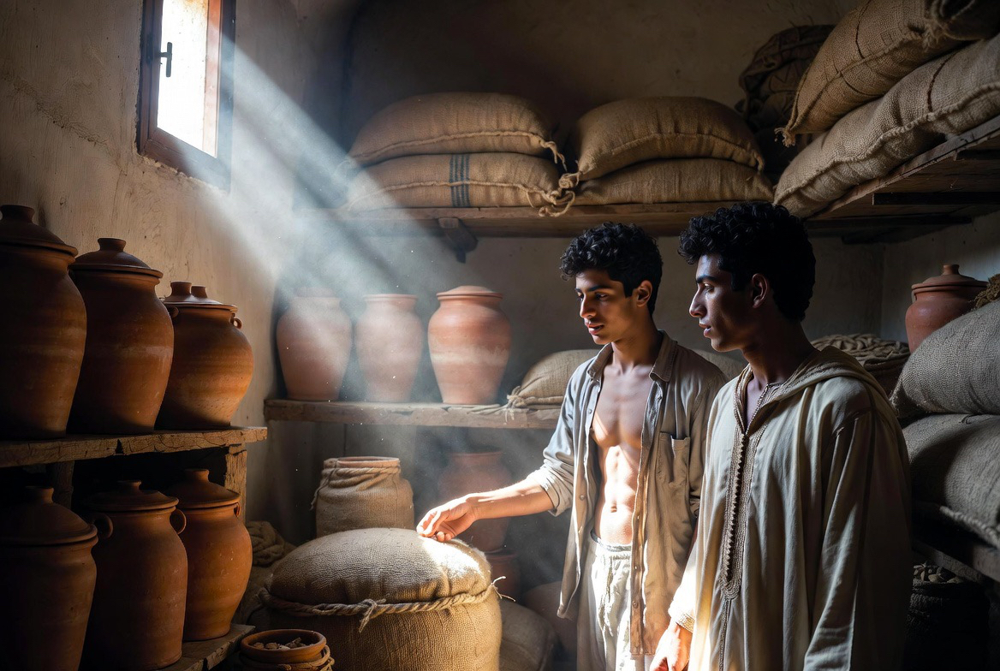
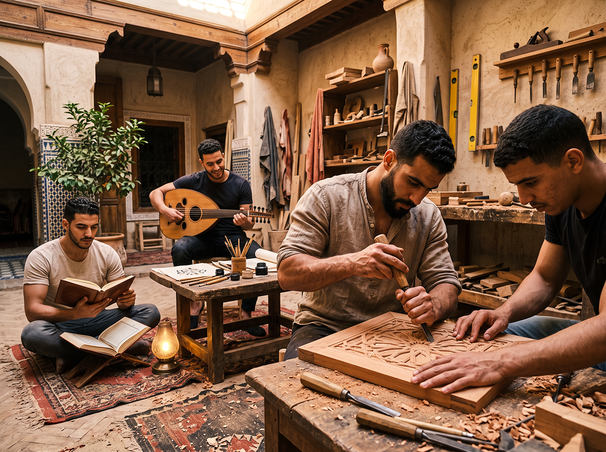
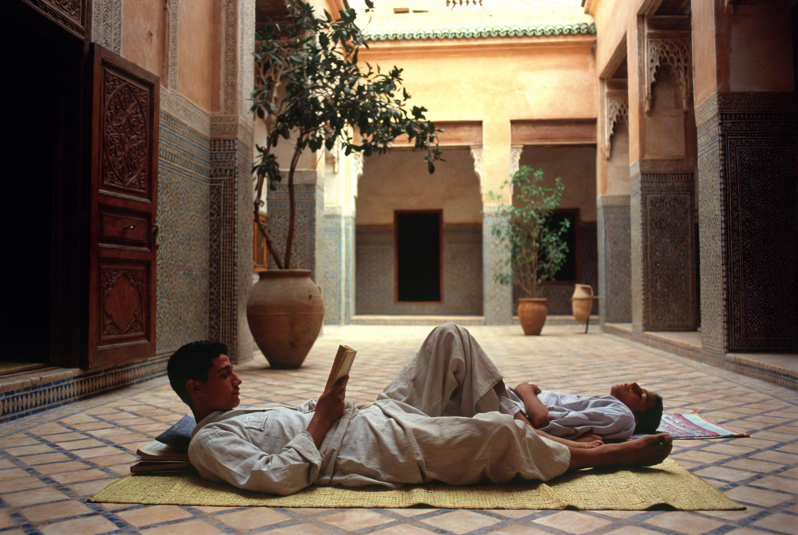

Expériences
Ce ne sont pas des produits touristiques. Ce sont des gestes de la maison, proposés avec mesure aux hôtes sélectionnés — et vécus d’abord par ceux qui y résident.

L’hôte n’achète pas un service. Il est invité, pour un temps limité, à entrer dans le rythme d’une maison vivante : prière, travail, silence, beauté des matières. Certaines expériences restent réservées à ceux qui y vivent.

Hammam
Rituel de purification : chaleur, vapeur, eau, silence. Selon l’usage ancien. L’espace appartient d’abord à la vie de la maison ; l’accès des hôtes reste sélectif et marginal.

Sauna
Chaleur sèche, retrait, récupération du corps. Intégrée à l’architecture, sans langage spa. Destinée en priorité à ceux qui s’y forment.

Métiers & gestes
Initiation courte aux savoir-faire : calligraphie, zellige, bois. Toucher la matière, respecter le temps du geste. Non un atelier-spectacle : une présence dans le travail réel de Dar al-Hiraf.

Cuisine & table
Repas partagés, produits du potager, cuisine marocaine de tradition. La table est un lieu de beauté, de retenue et de présence. On mange ensemble, sans bruit inutile.

Musique & chant
Oud, ney, bendir, voix. Écoute ou participation discrète, selon les jours. Le rythme forme autant que le silence. Jamais un spectacle : une pratique de la maison.

Présence & conversation
Le soir, sous les lanternes, le temps ralentit. Quelques paroles, beaucoup de silence. L’hôte est invité à être présent — non à consommer l’ambiance.

Silence & rythme
Moments de prière, de lecture, de promenade dans le jardin. L’expérience la plus rare : le temps non fragmenté.
L’hôte est invité à entrer dans le rythme de la maison, non à le consommer comme un décor.
Ces expériences sont proposées aux hôtes sélectionnés et, dans une mesure adaptée, aux résidents. Elles ne constituent pas un « produit » : elles sont l’expression naturelle de la vie du Riad.
Séjourner au Riad